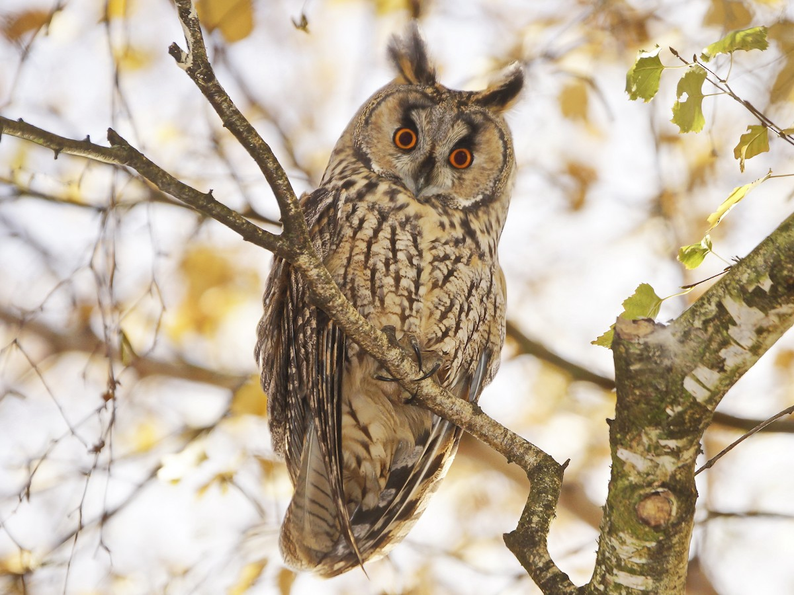
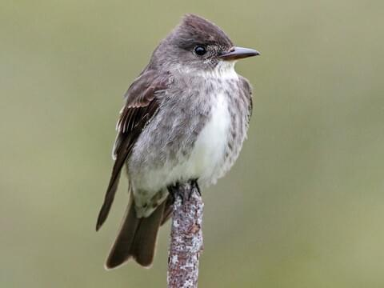

Animal Species
This table lists various endangered/protected animal species along with their images and protection status.
| Primary Common Name | Scientific Name | Class | Order | Family | Federal Protection | State Protection | Image | |
|---|---|---|---|---|---|---|---|---|
| Shortnose Sturgeon | Acipenser brevirostrum | Actinopterygii (Ray-finned Fishes) | Acipenseriformes (Paddlefishes, Spoonfishes, and Sturgeons) | Acipenseridae (Sturgeons) | Endangered | Endangered | ||
| Atlantic Sturgeon | Acipenser oxyrinchus | Actinopterygii (Ray-finned Fishes) | Acipenseriformes (Paddlefishes, Spoonfishes, and Sturgeons) | Acipenseridae (Sturgeons) | Endangered | Endangered | ||
| Sei Whale | Balaenoptera borealis | Mammalia (Mammals) | Cetacea (Whales, Dolphins, and Porpoises) | Balaenopteridae | Endangered | Endangered | ||
| Blue Whale | Balaenoptera musculus | Mammalia (Mammals) | Cetacea (Whales, Dolphins, and Porpoises) | Balaenopteridae | Endangered | Endangered | ||
| Fin Whale | Balaenoptera physalus | Mammalia (Mammals) | Cetacea (Whales, Dolphins, and Porpoises) | Balaenopteridae | Endangered | Endangered |  |
|
| Red Knot | Calidris canutus | Aves (Birds) | Charadriiformes (Gulls, Plovers, and Shorebirds) | Scolopacidae (Sandpipers, Snipes, and Relatives) | Threatened | Threatened | ||
| Loggerhead | Caretta caretta | Chelonia (Turtles) | Testudines (Turtles) | Cheloniidae | Threatened | Threatened | ||
| Piping Plover | Charadrius melodus | Aves (Birds) | Charadriiformes (Gulls, Plovers, and Shorebirds) | Charadriidae (Lapwings and Plovers) | Endangered, Threatened | Endangered |  |
|
| Green Turtle | Chelonia mydas | Chelonia (Turtles) | Testudines (Turtles) | Cheloniidae | Threatened | Threatened | ||
| Leatherback | Dermochelys coriacea | Chelonia (Turtles) | Testudines (Turtles) | Dermochelyidae | Endangered | Endangered | ||
| Northern Right Whale | Eubalaena glacialis | Mammalia (Mammals) | Cetacea (Whales, Dolphins, and Porpoises) | Balaenidae | Endangered | Endangered | ||
| Bog Turtle | Glyptemys muhlenbergii | Chelonia (Turtles) | Testudines (Turtles) | Emydidae (Box Turtles and Pond Turtles) | Threatened | Endangered | ||
| Black Rail | Laterallus jamaicensis | Aves (Birds) | Gruiformes (Rails and Cranes) | Rallidae (Rails, Gallinnules, and Coots) | Threatened | Endangered | ||
| Humpback Whale | Megaptera novaeangliae | Mammalia (Mammals) | Cetacea (Whales, Dolphins, and Porpoises) | Balaenopteridae | Endangered | Endangered | ||
| Northern Long-eared Bat | Myotis septentrionalis | Mammalia (Mammals) | Chiroptera (Bats) | Vespertilionidae (Evening Bats and Vesper Bats) | Endangered | Endangered |  |
|
| Indiana Bat | Myotis sodalis | Mammalia (Mammals) | Chiroptera (Bats) | Vespertilionidae (Evening Bats and Vesper Bats) | Endangered | Endangered |  |
|
| Chittenango Ovate Amber Snail | Novisuccinea chittenangoensis | Gastropoda (Gastropods) | Stylommatophora | Succineidae | Threatened | Endangered | ||
| Sperm Whale | Physeter macrocephalus | Mammalia (Mammals) | Cetacea (Whales, Dolphins, and Porpoises) | Physeteridae | Endangered | Endangered | ||
| Karner Blue | Plebejus melissa samuelis | Insecta (Insects) | Lepidoptera (Butterflies, Skippers, and Moths) | Lycaenidae (Blues, Coppers, Hairstreaks, Elfins) | Endangered | Endangered | ||
| Clubshell | Pleurobema clava | Bivalvia (Bivalves) | Unionoida (Freshwater Mussels) | Unionidae (Unionid Mussels) | Endangered | Endangered | ||
| Eastern Massasauga | Sistrurus catenatus | Reptilia (Reptiles) | Squamata (Lizards, Snakes and Amphisbaenians) | Viperidae (Vipers and Pit Vipers) | Threatened | Endangered | ||
| Roseate Tern | Sterna dougallii | Aves (Birds) | Charadriiformes (Gulls, Plovers, and Shorebirds) | Laridae (Terns, Gulls and Relatives) | Endangered | Endangered |  |
|
| Rayed Bean | Villosa fabalis | Bivalvia (Bivalves) | Unionoida (Freshwater Mussels) | Unionidae (Unionid Mussels) | Endangered | Endangered | ||
| Great Egret | Ardea alba | Aves (Birds) | Pelecaniformes (Pelicans and Cormorants) | Ardeidae (Herons, Bitterns, and Egrets) | --- | Protected Bird | ||
| Ruddy Turnstone | Arenaria interpres | Aves (Birds) | Charadriiformes (Gulls, Plovers, and Shorebirds) | Scolopacidae (Sandpipers, Snipes, and Relatives) | --- | Protected Bird | ||
| Long-eared Owl | Asio otus | Aves (Birds) | Strigiformes (Owls) | Strigidae (Typical Owls) | --- | Protected Bird |  | |
| Purple Sandpiper | Calidris maritima | Aves (Birds) | Charadriiformes (Gulls, Plovers, and Shorebirds) | Scolopacidae (Sandpipers, Snipes, and Relatives) | --- | Protected Bird | ||
| Olive-sided Flycatcher | Contopus cooperi | Aves (Birds) | Passeriformes (Perching Birds) | Tyrannidae | --- | Protected Bird |  | |
| Bobolink | Dolichonyx oryzivorus | Aves (Birds) | Passeriformes (Perching Birds) | Icteridae | --- | Protected Bird | ||
| Little Blue Heron | Egretta caerulea | Aves (Birds) | Pelecaniformes (Pelicans and Cormorants) | Ardeidae (Herons, Bitterns, and Egrets) | --- | Protected Bird | ||
| Snowy Egret | Egretta thula | Aves (Birds) | Pelecaniformes (Pelicans and Cormorants) | Ardeidae (Herons, Bitterns, and Egrets) | --- | Protected Bird | ||
| Rusty Blackbird | Euphagus carolinus | Aves (Birds) | Passeriformes (Perching Birds) | Icteridae | --- | Protected Bird | ||
| American Kestrel | Falco sparverius | Aves (Birds) | Falconiformes (Raptors) | Falconidae (Caracaras and Falcons) | --- | Protected Bird | ||
| American Oystercatcher | Haematopus palliatus | Aves (Birds) | Charadriiformes (Gulls, Plovers, and Shorebirds) | Haematopodidae | --- | Protected Bird | ||
| Wood Thrush | Hylocichla mustelina | Aves (Birds) | Passeriformes (Perching Birds) | Turdidae (Thrushes) | --- | Protected Bird | ||
| Laughing Gull | Leucophaeus atricilla | Aves (Birds) | Charadriiformes (Gulls, Plovers, and Shorebirds) | Laridae (Terns, Gulls and Relatives) | --- | Protected Bird | ||
| Whimbrel | Numenius phaeopus | Aves (Birds) | Charadriiformes (Gulls, Plovers, and Shorebirds) | Scolopacidae (Sandpipers, Snipes, and Relatives) | --- | Protected Bird | ||
| Scarlet Tanager | Piranga olivacea | Aves (Birds) | Passeriformes (Perching Birds) | Cardinalidae (Cardinal-Grosbeaks, Cardinals, Grosbeaks, Saltators) | --- | Protected Bird | ||
| Glossy Ibis | Plegadis falcinellus | Aves (Birds) | Pelecaniformes (Pelicans and Cormorants) | Threskiornithidae (Ibises and Spoonbills) | --- | Protected Bird | ||
| Prairie Warbler | Setophaga discolor | Aves (Birds) | Passeriformes (Perching Birds) | Parulidae (Wood-Warblers) | --- | Protected Bird |  |
|
| Barn Owl | Tyto alba | Aves (Birds) | Strigiformes (Owls) | Tytonidae ( Barn Owls) | --- | Protected Bird |